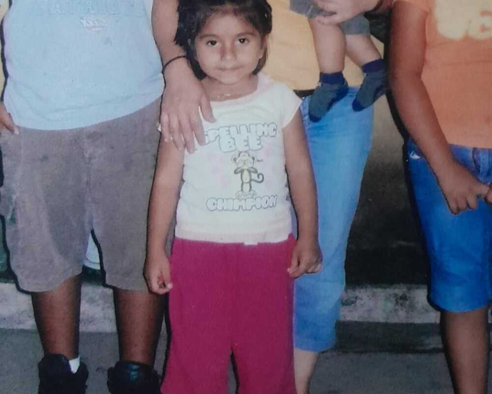
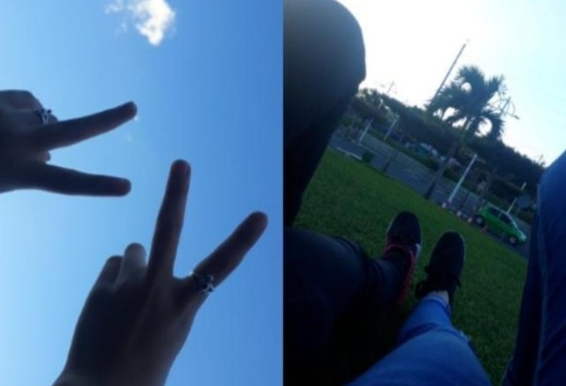
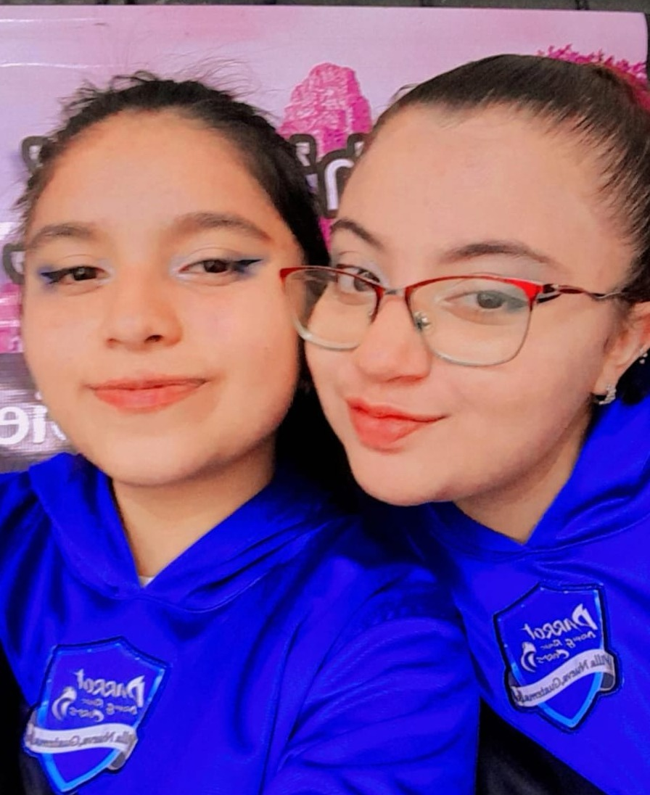

Madelaine
 Mis padres Yesenia Roxana García Pérez y Julio Rodolfo Tzunux Isidro se casaron hace 15 años, se conocieron cuando mi madre trabajaba en una panadería y mi padre acompañaba a mi abuela a la terminal a comprar distintos artículos para su tienda, ambos se enamoraron y tiempo después contrajeron matrimonio, nací el 14 de enero del 2005.
Mi madre trabajaba cuando estaba embarazada de mi por ello después me cuido mi tía hasta los 5 años y nació mi hermano menor Luis Eduardo cuando ingrese a párvulos en el Tabloncito, era una niña alegre logre ser abanderada, tuve buenos promedios desde muy pequeña. Luego ingrese a Preparatoria a los 6 años en la Escuelita.
A los 7 años empecé primaria en la Escuela Federal Mixta en jornada vespertina, no tenía muchos amigos y me volví más callada, cuando pase a segundo me cambie a jornada matutina en algún tiempo sufrí de bulling algo a resaltar es que soy una persona muy sensible y suele llorar. En el tercer año me caí de las escaleras el resultado una cicatriz en la ceja. Cuando ingresé a cuarto grado tuve un grupo más grande de amigas, sin embargo, siempre se llevaban unas más que otras. En quinto primaria yo seguía con buenos promedios, aunque ese año los padres tuvieron que dar una mensualidad para un maestro ya que no había. Llego el último año y por la misma razón nos dividieron a esa clase en otras, era agradable Y tuve mi primera relación romántica, fue bonito. Desde que tuve clases de música me encanta el piano el profesor tenia uno y nos enseñaba, ahí comenzó mi amor por ese instrumento, al final del año gané un reconocimiento por obtener el tercer lugar en el cuadro de honor.
 Ya pronto estábamos en Básicos el primer año y todo cambió radicalmente, algunos compañeros se quedaron y otros no, hice una amistad que se convirtió una de las mejores. Nunca me gusto educación física o solo la parte donde jugábamos futbol, ese deporte me da un poco de miedo aparte siempre me quedaba sola ya que tampoco me gustaba el basquetbol. De hecho, hasta me dieron un pelotazo, fue terrible. Tuve un mejor amigo que me empezó a gustar y hasta fuimos novios. Ahora era más tímida que antes y cuando tocaban exposiciones yo era pésima, odiaba exponer y ver mucha gente, mis promedios bajaron considerablemente. Segundo año de básicos mi pasión por el dibujo se hizo más grande, nunca le entendí mucho a algebra, pero pasé todos mis cursos, nunca me ha gustado bailar sin embargo lo hice en la gala que organizaron. El último año de básicos pasaron muchas cosas, en unos meses llego la pandemia y dejamos de ir aunque nos dejaron guías, pero recuerdo que terminamos haciendo todo 4 días antes de la entrega ya que no avisaron con tiempo. Ese año ya a finales tuve que decidir en qué carrera de diversificado quedaría sin embargo nunca lo pensé ni investigue sobre lo que realmente quería y me deje guiar por los comentarios que esta sería una que te garantizaría oportunidades laborales y solo la elegí por eso.
 Había llegado el momento más esperado “escoger mi carrera de diversificado”. Realmente nunca me puse a analizar e investigar sobre lo que quería estudiar, por eso me dejé guiar por las frases “te dará más oportunidades laborales”.
El primer año de carrera empezamos en modalidad virtual lo cual fue totalmente nuevo para mí ya que este era mi primer año en una institución privada y definitivamente no conocía el colegio ni a los profesores. Conocí muchas herramientas digitales por eso hasta tuve mi primera relación totalmente a distancia. El dibujo se volvió parte de mi completamente, me encantaba dibujar en recesos y en tardes y esto me hizo darme cuenta de que no estaba en la carrera correcta, sin embargo, mis calificaciones fueron excelentes nunca tuve notas tan buenas, tenía que sacar las mejores porque si no me empezaba a sentir inútil y esto fue algo que me ataco ya que todo dependía de mis buenos punteos.
El 2021 fue un año donde descubrí tantos tipos de música y también creció en mí una pasión por investigar sobre el universo y sus elementos hasta fue el año donde me encante con el anime uno de mis favoritos fue Boku no hero academy y tokyo revengers, no me aburría era capitulo tras capitulo en los recesos.
El 2022 fue un año un poco difícil ya que murió mi tía a principios de año fue muy duro para nosotros, apoyamos en esos momentos tan difíciles para mis primos.
Tuve que exigirme más porque era mi segundo año de carrera, aunque no me fue muy bien ya que no le entendía a muchas cosas y agradecí lograr entregar mis trabajos lastimosamente luego de eso mi padre renuncio a su trabajo y poco tiempo después mi madre también lo que la llevo a una crisis emocional, fue complicado porque duro casi un mes. Ella empezó a recuperarse poco a poco.
Tuvimos la oportunidad de un viaje a la playa junto con nuestra familia fue definitivamente lo que necesitábamos y después de aproximadamente un mes logro encontrar un empleo y yo hasta descubrí que había una convocatoria para entrar a la banda “Parrot Drum and del Liceo Valle del Sol lo cual me llamo la atención por la presentación que realizaron el 15 de septiembre en el colegio yo nunca estuve en una banda y esta tenía 4 secciones (vientos, danza, percusión y ensamble frontal) yo me uni a ensamble frontal esos 2 meses y medio fueron una experiencia muy buena empecé a ver que el aprendizaje de un instrumento es un gran momento, al igual que conocer personas muy amables e inteligentes como ellos.